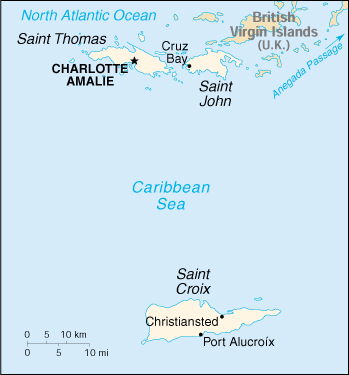

(territory of the US)
|
Virgin Islands (territory of the US) |
|
| Introduction Geography People Government Economy Communications Transportation Military Transnational Issues | ||
|  | ||
| Virgin Islands | Introduction | Top of Page |
| Background: | During the 17th century, the archipelago was divided into two territorial units, one English and the other Danish. Sugarcane, produced by slave labor, drove the islands' economy during the 18th and early 19th centuries. In 1917, the US purchased the Danish portion, which had been in economic decline since the abolition of slavery in 1848. |
| Virgin Islands | Geography | Top of Page |
| Location: | Caribbean, islands between the Caribbean Sea and the North Atlantic Ocean, east of Puerto Rico |
| Geographic coordinates: | 18 20 N, 64 50 W |
| Map references: | Central America and the Caribbean |
| Area: |
total:
352 sq km
land: 349 sq km water: 3 sq km |
| Area - comparative: | twice the size of Washington, DC |
| Land boundaries: | 0 km |
| Coastline: | 188 km |
| Maritime claims: |
exclusive economic zone:
200 NM
territorial sea: 12 NM |
| Climate: | subtropical, tempered by easterly trade winds, relatively low humidity, little seasonal temperature variation; rainy season May to November |
| Terrain: | mostly hilly to rugged and mountainous with little level land |
| Elevation extremes: |
lowest point:
Caribbean Sea 0 m
highest point: Crown Mountain 474 m |
| Natural resources: | sun, sand, sea, surf |
| Land use: |
arable land:
15%
permanent crops: 6% permanent pastures: 26% forests and woodland: 6% other: 47% (1993 est.) |
| Irrigated land: | NA sq km |
| Natural hazards: | several hurricanes in recent years; frequent and severe droughts and floods; occasional earthquakes |
| Environment - current issues: | lack of natural freshwater resources |
| Geography - note: | important location along the Anegada Passage - a key shipping lane for the Panama Canal; Saint Thomas has one of the best natural, deepwater harbors in the Caribbean |
| Virgin Islands | People | Top of Page |
| Population: | 122,211 (July 2001 est.) |
| Age structure: |
0-14 years:
27.27% (male 17,121; female 16,204)
15-64 years: 63.92% (male 35,391; female 42,727) 65 years and over: 8.81% (male 4,638; female 6,130) (2001 est.) |
| Population growth rate: | 1.06% (2001 est.) |
| Birth rate: | 15.9 births/1,000 population (2001 est.) |
| Death rate: | 5.47 deaths/1,000 population (2001 est.) |
| Net migration rate: | 0.12 migrant(s)/1,000 population (2001 est.) |
| Sex ratio: |
at birth:
1.06 male(s)/female
under 15 years: 1.06 male(s)/female 15-64 years: 0.83 male(s)/female 65 years and over: 0.76 male(s)/female total population: 0.88 male(s)/female (2001 est.) |
| Infant mortality rate: | 9.43 deaths/1,000 live births (2001 est.) |
| Life expectancy at birth: |
total population:
78.27 years
male: 74.38 years female: 82.39 years (2001 est.) |
| Total fertility rate: | 2.25 children born/woman (2001 est.) |
| HIV/AIDS - adult prevalence rate: | NA% |
| HIV/AIDS - people living with HIV/AIDS: | NA |
| HIV/AIDS - deaths: | NA |
| Nationality: |
noun:
Virgin Islander(s)
adjective: Virgin Islander |
| Ethnic groups: |
black 80%, white 15%, other 5%
note: West Indian (45% born in the Virgin Islands and 29% born elsewhere in the West Indies) 74%, US mainland 13%, Puerto Rican 5%, other 8% |
| Religions: | Baptist 42%, Roman Catholic 34%, Episcopalian 17%, other 7% |
| Languages: | English (official), Spanish, Creole |
| Literacy: |
definition:
NA
total population: NA% male: NA% female: NA% |
| Virgin Islands | Government | Top of Page |
| Country name: |
conventional long form:
United States Virgin Islands
conventional short form: Virgin Islands former: Danish West Indies |
| Dependency status: | organized, unincorporated territory of the US with policy relations between the Virgin Islands and the US under the jurisdiction of the Office of Insular Affairs, US Department of the Interior |
| Government type: | NA |
| Capital: | Charlotte Amalie |
| Administrative divisions: | none (territory of the US); there are no first-order administrative divisions as defined by the US Government, but there are three islands at the second order; Saint Croix, Saint John, Saint Thomas |
| National holiday: | Transfer Day (from Denmark to the US), 27 March (1917) |
| Constitution: | Revised Organic Act of 22 July 1954 |
| Legal system: | based on US laws |
| Suffrage: | 18 years of age; universal; note - indigenous inhabitants are US citizens but do not vote in US presidential elections |
| Executive branch: |
chief of state:
President George W. BUSH of the US (since 20 January 2001); Vice President Richard B. CHENEY (Since 20 January 2001)
head of government: Governor Dr. Charles Wesley TURNBULL (since 5 January 1999) and Lieutenant Governor Gererd LUZ James II (since 5 January 1999) cabinet: NA elections: US president and vice president elected on the same ticket for four-year terms; governor and lieutenant governor elected on the same ticket by popular vote for four-year terms; election last held 3 November 1998 (next to be held NA November 2002) election results: Dr. Charles Wesley TURNBULL elected governor; percent of vote - Dr. Charles W. TURNBULL (Democrat) 58.9%, former Governor Roy L. SCHNEIDER (ICM) 41.1% |
| Legislative branch: |
unicameral Senate (15 seats; members are elected by popular vote to serve two-year terms)
elections: last held 7 November 2000 (next to be held NA November 2002) election results: percent of vote by party - NA%; seats by party - Democratic Party 6, ICM 2, independents 7 note: the Virgin Islands elects one non-voting representative to the US House of Representatives; election last held 7 November 2000 (next to be held NA November 2002); results - Donna M. CHRISTIAN-CHRISTENSON (Democrat) elected |
| Judicial branch: | US District Court of the Virgin Islands (under Third Circuit jurisdiction); Territorial Court (judges appointed by the governor for 10-year terms) |
| Political parties and leaders: | Democratic Party [Arturo WATLINGTON]; Independent Citizens' Movement or ICM [Usie RICHON]; Republican Party [Gary SCROUVE] |
| Political pressure groups and leaders: | NA |
| International organization participation: | ECLAC (associate), Interpol (subbureau), IOC |
| Diplomatic representation in the US: | none (territory of the US) |
| Diplomatic representation from the US: | none (territory of the US) |
| Flag description: | white, with a modified US coat of arms in the center between the large blue initials V and I; the coat of arms shows a yellow eagle holding an olive branch in one talon and three arrows in the other with a superimposed shield of vertical red and white stripes below a blue panel |
| Virgin Islands | Economy | Top of Page |
| Economy - overview: | Tourism is the primary economic activity, accounting for more than 70% of GDP and 70% of employment. The islands normally host 2 million visitors a year. The manufacturing sector consists of petroleum refining, textiles, electronics, pharmaceuticals, and watch assembly. The agricultural sector is small, with most food being imported. International business and financial services are a small but growing component of the economy. One of the world's largest petroleum refineries is at Saint Croix. The islands are subject to substantial damage from storms. The government is working to improve fiscal discipline, support construction projects in the private sector, expand tourist facilities, and protect the environment. |
| GDP: | purchasing power parity - $1.8 billion (2000 est.) |
| GDP - real growth rate: | NA% |
| GDP - per capita: | purchasing power parity - $15,000 (2000 est.) |
| GDP - composition by sector: |
agriculture:
NA%
industry: NA% services: NA% |
| Population below poverty line: | NA% |
| Household income or consumption by percentage share: |
lowest 10%:
NA%
highest 10%: NA% |
| Inflation rate (consumer prices): | NA% |
| Labor force: | 47,443 (1990 est.) |
| Labor force - by occupation: | agriculture 1%, industry 20%, services 79% (1990 est.) |
| Unemployment rate: | 4.9% (March 1999) |
| Budget: |
revenues:
$364.4 million
expenditures: $364.4 million, including capital expenditures of $NA (1990 est.) |
| Industries: | tourism, petroleum refining, watch assembly, rum distilling, construction, pharmaceuticals, textiles, electronics |
| Industrial production growth rate: | NA% |
| Electricity - production: | 1.02 billion kWh (1999) |
| Electricity - production by source: |
fossil fuel:
100%
hydro: 0% nuclear: 0% other: 0% (1999) |
| Electricity - consumption: | 948.6 million kWh (1999) |
| Electricity - exports: | 0 kWh (1999) |
| Electricity - imports: | 0 kWh (1999) |
| Agriculture - products: | fruit, vegetables, sorghum; Senepol cattle |
| Exports: | $NA |
| Exports - commodities: | refined petroleum products |
| Exports - partners: | US, Puerto Rico |
| Imports: | $NA |
| Imports - commodities: | crude oil, foodstuffs, consumer goods, building materials |
| Imports - partners: | US, Puerto Rico |
| Debt - external: | $NA |
| Economic aid - recipient: | $NA |
| Currency: | US dollar (USD) |
| Currency code: | USD |
| Exchange rates: | the US dollar is used |
| Fiscal year: | 1 October - 30 September |
| Virgin Islands | Communications | Top of Page |
| Telephones - main lines in use: | 62,000 (1997) |
| Telephones - mobile cellular: | 2,000 (1992) |
| Telephone system: |
general assessment:
NA
domestic: modern, uses fiber-optic cable and microwave radio relay international: submarine cable and satellite communications; satellite earth stations - NA |
| Radio broadcast stations: | AM 5, FM 11, shortwave 0 (1998) |
| Radios: | 107,000 (1997) |
| Television broadcast stations: | 2 (1997) |
| Televisions: | 68,000 (1997) |
| Internet country code: | .vi |
| Internet Service Providers (ISPs): | 50 (2000) |
| Internet users: | 12,000 (2000) |
| Virgin Islands | Transportation | Top of Page |
| Railways: | 0 km |
| Highways: |
total:
856 km
paved: NA km unpaved: NA km (2000) |
| Waterways: | none |
| Ports and harbors: | Charlotte Amalie, Christiansted, Cruz Bay, Port Alucroix |
| Merchant marine: | none (2000 est.) |
| Airports: |
2
note: international airports on Saint Thomas and Saint Croix (2000 est.) |
| Airports - with paved runways: |
total:
2
1,524 to 2,437 m: 2 (2000 est.) |
| Virgin Islands | Military | Top of Page |
| Military - note: | defense is the responsibility of the US |
| Virgin Islands | Transnational Issues | Top of Page |
| Disputes - international: | none |
{kind=link}
{kind=link}